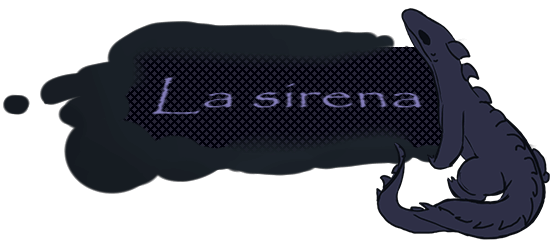

¿De qué se trata el juego?
El juego está basado en el relato "La Sirena" de Ray Bradbury, publicado en 1951.
Es una historia sobre
la
soledad y el paso del tiempo, donde una extraña criatura acude a un faro luego de oír su sirena. El
juego te
invita a explorar el mundo de aquella bestia, interactuando con ella y con el farero, mientras descubrís los
secretos y las emociones que se esconden tras este encuentro.
El juego está hecho con p5.js, una biblioteca de JavaScript para la codificación creativa. La misma tiene múltiples finales posibles, dependiendo de las elecciones que hagas a medida que avanzás.
¿Te animás a jugar? Hacé clic acá y sumergite en el mundo de "La Sirena".